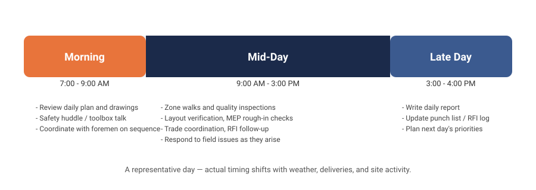
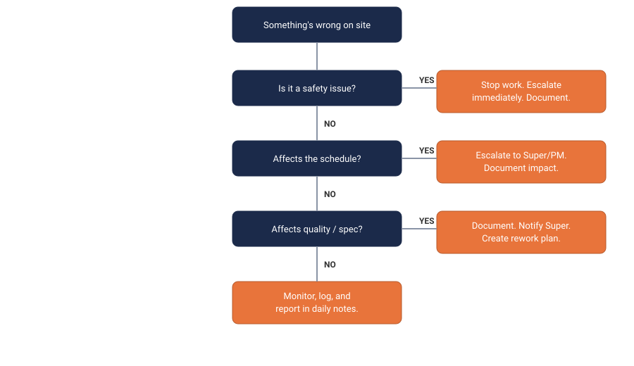

From Infantry to Field Engineer in 4 Weeks
A self-paced learning program built to translate Army operations leadership into commercial construction field engineering — with a specific eye toward interviewing at JE Dunn Construction for the Meta El Paso data center project.
Start Week 1 →This site walks through four weeks of self-directed prep: learning the vocabulary and hierarchy of a construction site, understanding what a Field Engineer actually does day to day, and then translating your own Army project experience into language a construction hiring manager immediately understands.
Foundations
Site hierarchy, daily responsibilities, glossary, and the Army-to-Construction translator.
Week 2Field Engineer Deep Dive
Responsibilities matrix, decision trees, and a real-world scenario problem solver.
Week 3Interviews + Culture
30+ interview questions, talking points, and JE Dunn's culture and values.
Week 4Final Prep & Polish
Mock interview simulator, a printable checklist, and a one-page quick reference.
BonusReal Construction
Videos, daily habits, red flags, and case studies from real PMs and field engineers.
Foundations
Learn the site hierarchy, a Field Engineer's daily rhythm, the core vocabulary, and how your Army project experience maps onto construction workflows.
Meta El Paso Project Snapshot
1.1 Site Hierarchy
Click or tap any role in the chart to see its responsibilities.
You sit here: between the office PM/Superintendent chain and the field trades.
1.2 Daily Responsibilities
Click a task to see what it involves.

1.3 Glossary
Search or filter by category. This is a preview — the full glossary lives on the Glossary page.
1.4 Army-to-Construction Translator
Select one of your Army projects to see its direct construction equivalent.
Field Engineer Deep Dive
The daily playbook, a decision-tree for handling site issues, and a library of real-world scenarios to practice against.
2.1 FE Responsibilities Matrix
content/week2/fe-responsibilities.json as you build out Week 2.2.2 Decision Tree: Something's Wrong on Site
Answer the questions to walk through the correct escalation path.

2.3 Common Site Scenarios (Problem Solver)
content/week2/common-scenarios.json (aim for 10-15 total) as you build out Week 2.Interview Prep + JE Dunn Context
The interview question bank, how to frame your Army experience, and what JE Dunn actually values in a Field Engineer.
3.1 Interview Question Bank
content/week3/interview-questions.json.3.2 Talking Points
3.3 JE Dunn Culture & Approach
Final Prep & Polish
Practice out loud, check off your final prep items, and keep a one-page quick reference handy.
4.1 Mock Interview Simulator
Choose a flow, answer each question, then reveal the model answer and self-rate how you did.
4.2 Pre-Interview Checklist
4.3 Quick Reference
A single-page reference you can print and bring with you.
Real Construction
Learn from seasoned PMs and field engineers — curated videos, daily habits, real red-flag scenarios, and case studies from actual projects, beyond what's in a textbook.
Your Progress
Video Library
content/real-construction/videos.json.Daily Habit Tracker
Check off habits as you practice them. Resets each day; your streaks and weekly score are saved in this browser.
Red Flags Library
Click a scenario, then click through the decision tree — the correct path is highlighted in green, wrong turns show you the real consequence.
content/real-construction/red-flags.json.Case Study Breakdowns
content/real-construction/case-studies.json.Expert Q&A
content/real-construction/expert-qa.json.Full Glossary
Every term across the program, searchable and filterable by category.
Resources
Printable references you can take into an interview, plus your progress tracker.
Army Translation Guide
Full detail on how each Army project maps to construction workflows.
Open DocumentProgress Tracker
Your saved progress, stored locally in this browser.
About / Instructions
How to Use This Site
Work through Week 1 to Week 4 in order — each week builds on the last. Your progress is saved automatically in this browser (via localStorage), so you can close the tab and pick up where you left off.
- Use the sticky top navigation or the home page cards to jump between weeks.
- The sidebar checklist shows which weeks you've visited.
- Use the Glossary page any time you need to look up a term.
- Print-friendly buttons throughout the site (glossary, checklist, quick reference) generate clean printouts via your browser's print dialog.
- Toggle dark mode with the 🌙 button in the header — useful for outdoor readability.
Adding New Content
Weeks 2-4 and the Real Construction section ship with working components and sample data. To expand them, edit the corresponding JSON files in content/week2, content/week3, content/week4, and content/real-construction — no code changes required. See the README in the repository root for the full data schema.